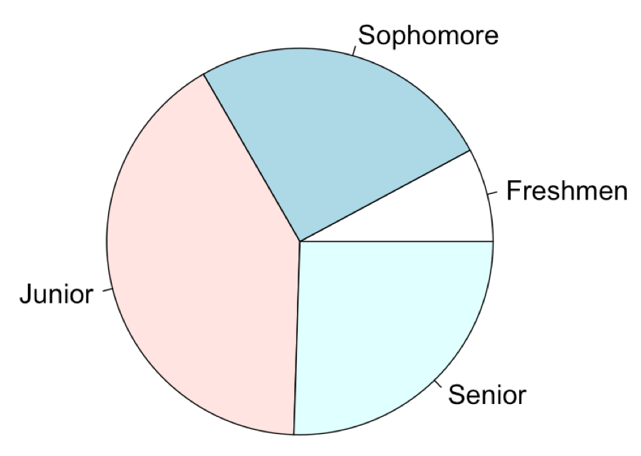
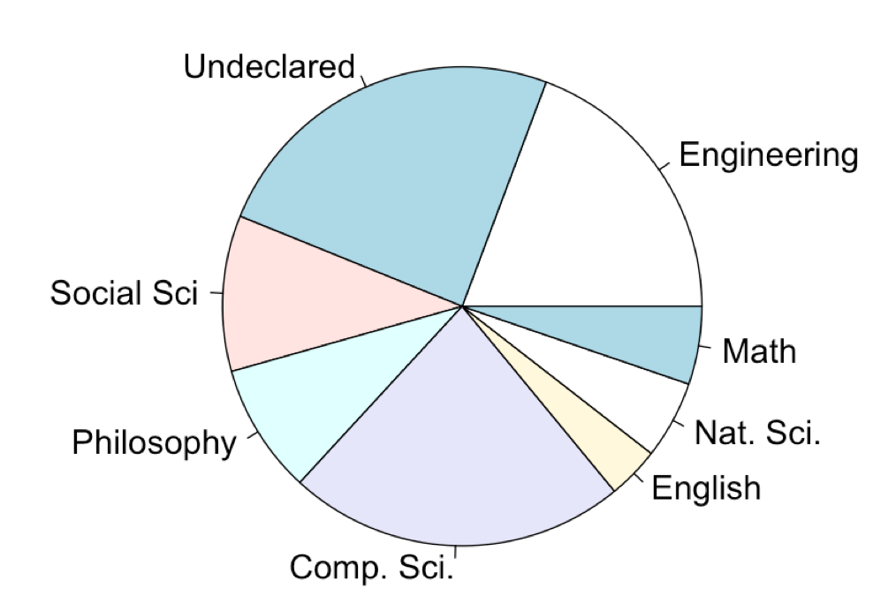

Teaching Logic Logically and Digitally
"...empiricism is a celebration of a certain kind of freedom from oneself: one's own theoretical convictions, however much valued, must be always ready for a suspension...",
Bas van Fraassen, "Against Naturalized Epistemology"
About Philosophy 150
General Introduction to Logic
Freshmen Level Course
Requirement for Philosophy Majors
Not Required for Other Major or General Education
No Prerequisite
Who Takes Phil 150?


Consequence
the Snowball Effect!
Psychological Behaviorism
Fred S Keller (1899-1996)
Idea 1
Reinforcement of Active Learning Through Autonomy and Free Choice
Idea 2
Operant Conditioning: Rewarding Desirable Behavior
Behavioral Decision Theory
The Architecture of Choices
Idea 1
Cognitive Fluency
Logic is hard enough. Learning it should be easy.
Idea 2
Social Epistemology
Idea 3
Nudge
Future Directions
Idea 1
Probabilistic Scoring Rules
as an Alternative to Traditional Multiple Choice Grading
Idea 2
Digital Mentorship
Your ideas?